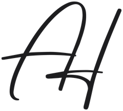

خمس أسئلة، وقلم، وأرقام الشهر اللي فات. مش محتاج تكون دارس مالية. هتعرف فلوسك واقفة فين قبل ما تستثمر ولا جنيه.
اكتب دخلك الشهري واللي صرفته الشهر اللي فات. اطرح المصاريف من الدخل: ده اللي بيفضل معاك. اقسمه على الدخل تطلع نسبة ادخارك.
اقسم الكاش اللي تقدر توصله بسرعة على مصاريفك الشهرية. ده عدد الشهور اللي تقدر تغطيها لو الدخل وقف. مخططين ماليين كتير بيستخدموا من 3 لـ 6 شهور كنقطة مرجعية.
اجمع كل الأقساط وأقساط القروض الشهرية، واقسمهم على الدخل. في أي تقسيط، اسأل عن الفايدة السنوية الحقيقية، مش الفايدة «الثابتة». والمصاريف اللي بتدفعها مقدّم بتتحسب برضه.
قد إيه من اللي تملكه قاعد كاش بالجنيه ومبيكسبش حاجة؟ الأسعار زادت حوالي 13.9% في السنة لحد سبتمبر 2026 (الجهاز المركزي للتعبئة العامة والإحصاء)، فالكاش اللي مبيكسبش بيشتري أقل كل سنة.
قبل ما تحط فلوس في أي مكان: اعرف الاسم القانوني الكامل للشركة، دوّر عليه في fra.gov.eg، واتأكد إن الترخيص بيغطي اللي هتشتريه. إجابات مش واضحة؟ امشي.
حاسبة ZD ببلاش بتقارن ست طرق في مصر تكبّر بيها فلوسك، بقيمة فلوس النهارده.
جلسة ساعة معايا أونلاين. تبدأ منين وتتعلّم إيه الأول.